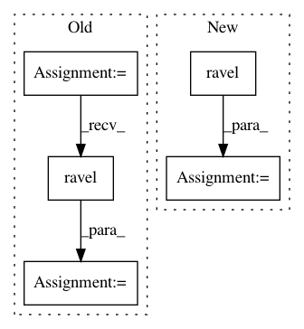

c977c0b4542a50a71fa2913bda2a99ddc128a1e9,chainer_chemistry/functions/mean_absolute_error.py,MeanAbsoluteError,forward_gpu,#MeanAbsoluteError#Any#,27
Before Change
def forward_gpu(self, inputs):
x0, x1 = inputs
self.diff = x0 - x1
diff = self.diff.ravel()
return abs(diff).sum() / diff.dtype.type(diff.size),
def backward(self, indexes, grad_outputs):
gy, = grad_outputs
After Change
def forward_gpu(self, inputs):
self.retain_inputs((0, 1))
cupy = cuda.cupy
diff = (inputs[0] - inputs[1]).ravel()
if self.ignore_nan:
diff[cupy.isnan(diff)] = 0.
return abs(diff).sum() / diff.dtype.type(diff.size),
In pattern: SUPERPATTERN
Frequency: 3
Non-data size: 5
Instances
Project Name: pfnet-research/chainer-chemistry
Commit Name: c977c0b4542a50a71fa2913bda2a99ddc128a1e9
Time: 2018-06-20
Author: mottodora@gmail.com
File Name: chainer_chemistry/functions/mean_absolute_error.py
Class Name: MeanAbsoluteError
Method Name: forward_gpu
Project Name: nipy/dipy
Commit Name: 189749ef47d3d6459717b37abb90851d0c425e50
Time: 2016-08-29
Author: rafaelnh21@gmail.com
File Name: dipy/reconst/fwdti.py
Class Name:
Method Name: nlls_fit_tensor
Project Name: pfnet-research/chainer-chemistry
Commit Name: c977c0b4542a50a71fa2913bda2a99ddc128a1e9
Time: 2018-06-20
Author: mottodora@gmail.com
File Name: chainer_chemistry/functions/mean_absolute_error.py
Class Name: MeanAbsoluteError
Method Name: forward_cpu